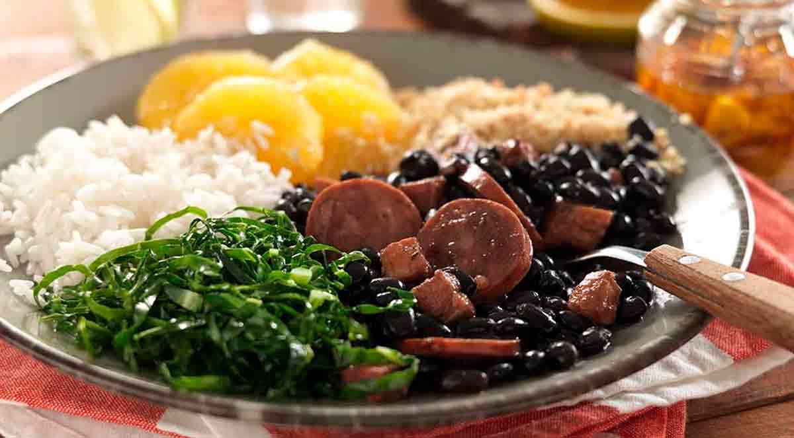

Igredientes
- 1 Kg de feijão preto
- 70 g de orelha de porco
- 70 g de pé de porco
- 50 g de lombo de porco
- 150 g de lingüiça portuguesa
- 100 g de carne seca
- 70 g de rabo de porco
- 100 g de costelinha de porco
- 100 g de paio
- 2 cebolas grandes picadinhas
- 1 maço de cebolinha verde picadinha
- 3 folhas de louro
- 6 dentes de alho
- Pimenta do reino a gosto
- 1 ou 2 laranjas
- 40 ml de de pinga
- Sal se precisar
Modo de preparo
- Coloque as carnes de molho por 36 horas ou mais, vá trocando a água várias
vezes, se for ambiente quente ou verão, coloque gelo por cima ou em camadas frias.
- Coloque para cozinhar passo a passo: as carnes duras, em seguida as carnes moles.
- Quando estiver mole coloque o feijão, e retire as carnes.
- Finalmente tempere o feijão
- Acompanhamentos: Couve, arroz branco, laranja, bistecas, farofa,
quibebe de abóbora, baião de dois, bacon, torresmo, lingüicinha e caldinho temperado - copinhos.
Fonte:https://www.tudogostoso.com.br/receita/2998-feijoada.html